1. Introduction: Meet Your Dataset Before Analyzing It
Imagine kijiye ki aap ek college ke examination cell mein Data Analyst ke roop mein join karte hain. Aapke desk par Dean ek CSV file bhejte hain jisme 5,000 students ka semester performance data hai. Unka seedha sawaal hai: "Hamare college ka average pass percentage kya hai, aur kaun sa department top par hai?"
Ek novice programmer turant df['marks'].mean() calculate karne ki jaldbazi karega. Lekin ek professional data scientist janta hai ki uninspected data par direct calculations karna aag se khelne jaisa hai! Kyunki asal duniya ka raw data hamesha messy hota hai:
- Missing Records: Kya kuch students ke exam marks enter hi nahi huye (NaN)? Agar hain, toh average unhe kaise treat kar raha hai?
- Suspicious Values: Kya kisi student ke marks galti se
120ya-5type ho gaye hain? Ek single typing error poore college ka average distort kar dega! - Data Type Traps: Kya marks column numbers ke roop mein store hai, ya phir text string (
'85') ke roop mein? Agar string hai, toh Pandas average calculate karne ke bajaye error throw karega! - Duplicate Entries: Kya kisi student ka record do baar enter ho gaya hai? Agar haan, toh us student ke marks do baar count ho jayenge!
- Category Inconsistencies: Kya computer science department ko kahin
'CS', kahin'CSE', aur kahin'Computer Science'likha gaya hai?
Exploratory Data Analysis (EDA) Workflow
Data science ki bhasha mein is discovery process ko Exploratory Data Analysis (EDA) kaha jaata hai. Initial inspection ka maksad mathematical formulas apply karna nahi, balki dataset ke physical structure, health, aur limitations ko samajhna hota hai:
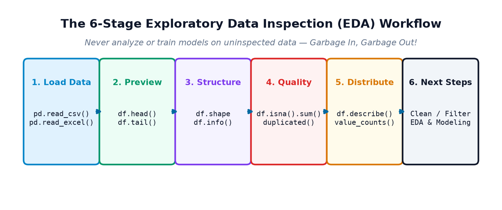
Chaliye is roadmap ke har inspection tool ko practical python code, verified outputs, aur visual diagnostics ke saath detail mein master karte hain!
2. head() & tail(): Preview the Dataset
Jab aap kisi nayi 100 MB ya 1 GB ki CSV file ko Pandas DataFrame mein load karte hain, toh agar aap poore DataFrame ko print karne ki koshish karenge, toh aapka terminal ya Jupyter notebook lakho rows se bhar jayega aur freeze ho sakta hai. Isliye sabse pehla command jo har data scientist chalata hai, woh hai df.head() aur df.tail().
Default Behavior aur Parameter 'n'
df.head(n=5): DataFrame ke shuruatinrows ko display karta hai. Agar aap koi number pass nahi karte, toh by default yeh top 5 rows return karta hai.df.tail(n=5): DataFrame ke aakhirinrows ko display karta hai. By default yeh bottom 5 rows return karta hai.df.head(10)yadf.tail(3): Aap custom number of rows specify kar sakte hain.
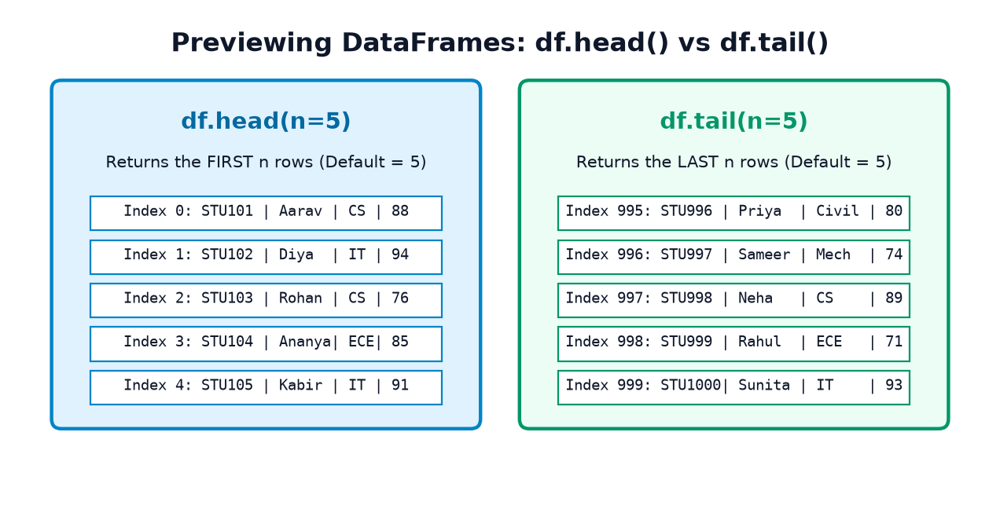
Example 1: Previewing a Student Performance Dataset
Dekhiye ek synthetic student dataset mein head() aur head(3) kaise kaam karta hai:
import pandas as pd # 1. Create a synthetic student dataset students_data = { 'student_id': ['S101', 'S102', 'S103', 'S104', 'S105', 'S106', 'S107', 'S108'], 'name': ['Aarav', 'Diya', 'Rohan', 'Ananya', 'Kabir', 'Meera', 'Aditya', 'Pooja'], 'department': ['CS', 'IT', 'CS', 'ECE', 'IT', 'CS', 'Mech', 'ECE'], 'marks': [88, 94, 76, 85, 91, 68, 82, 79], 'attendance': [92, 96, 85, 90, 88, 75, 84, 89] } df_students = pd.DataFrame(students_data) # 2. Display default first 5 rows print("--- df.head() Default Top 5 Rows ---") print(df_students.head()) # 3. Display specific top 3 rows print("\n--- df.head(3) Custom Top 3 Rows ---") print(df_students.head(3))
Example 2: Previewing E-Commerce Orders with tail()
Aksar datasets chronologically sorted hote hain, jahan sabse recent transactions file ke bilkul end mein append hoti hain. tail() se aap check kar sakte hain ki latest data properly ingest hua hai ya nahi:
import pandas as pd orders_data = { 'order_id': ['ORD-101', 'ORD-102', 'ORD-103', 'ORD-104', 'ORD-105', 'ORD-106', 'ORD-107'], 'product': ['Laptop Bag', 'Wireless Mouse', 'USB-C Cable', 'Mechanical Keyboard', 'Monitor Stand', 'Webcam 1080p', 'Desk Mat'], 'category': ['Accessories', 'Electronics', 'Electronics', 'Electronics', 'Furniture', 'Electronics', 'Accessories'], 'quantity': [2, 1, 3, 1, 1, 2, 2], 'unit_price': [1299, 799, 299, 3499, 1499, 2499, 499] } df_orders = pd.DataFrame(orders_data) # 1. Preview default last 5 orders print("--- df.tail() Default Bottom 5 Orders ---") print(df_orders.tail()) # 2. Preview last 2 orders print("\n--- df.tail(2) Latest 2 Orders ---") print(df_orders.tail(2))
head() dekhkar yeh assume mat kar lijiye ki poora dataset perfect hai! Pehle 5 rows clean ho sakte hain, lekin row number 500 ya 10,000 par corrupt text, invalid negative numbers, ya missing values chupe ho sakte hain. Isliye previewing sirf pehla kadam hai, final inspection nahi.
3. shape, columns, index, and size
DataFrame ke basic geometry aur structural boundaries ko janne ke liye Pandas hume char foundational attributes (properties) deta hai. Dhyan rahe: yeh functions ya methods nahi hain, isliye inke aage parentheses () nahi lagate!
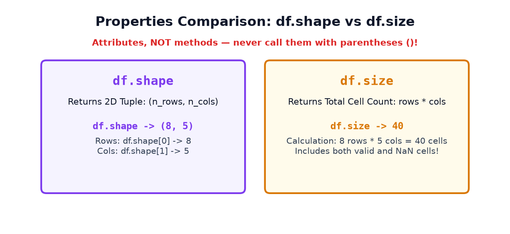
The Four Key Properties
df.shape: Ek tuple return karta hai(n_rows, n_columns). Aap total rows janne ke liyedf.shape[0]aur total columns janne ke liyedf.shape[1]use karte hain.df.columns: Ek PandasIndexobject return karta hai jisme sabhi column headers ke naam hote hain. Aapdf.columns.tolist()se ise standard Python list mein convert kar sakte hain.df.index: DataFrame ke row labels ya range index ko return karta hai (jaiseRangeIndex(start=0, stop=8, step=1)).df.size: Poore DataFrame mein total kitne data cells (elements) hain, yeh return karta hai (Calculation:rows × columns). Yeh missing/null cells ko bhi count karta hai!
Example 1: Inspecting Student Dataset Dimensions & Columns
import pandas as pd # Using df_students from Section 2 print(f"df.shape: {df_students.shape}") print(f"Total Students (Rows): {df_students.shape[0]}") print(f"Total Attributes (Columns): {df_students.shape[1]}") print(f"Column Headers: {df_students.columns.tolist()}") print(f"Row Index: {df_students.index}") print(f"Total Elements (size): {df_students.size}")
Example 2: Inspecting Sales Dataset Geometry
import pandas as pd # Using df_orders from Section 2 n_rows, n_cols = df_orders.shape total_cells = df_orders.size print(f"The sales dataset contains {n_rows} order records across {n_cols} columns.") print(f"Grid contains {total_cells} total values ({n_rows} * {n_cols} = {total_cells}).") print(f"Has 'unit_price' column? {'unit_price' in df_orders.columns}")
df.shape() ya df.columns(). Isse turant error aata hai: TypeError: 'tuple' object is not callable! Yaad rakhiye: shape aur columns properties hain, functions nahi.
4. info(): Understand the Dataset Structure
Agar aapko dataset ka ek single comprehensive health checkup & diagnostic report chahiye, toh df.info() se behtar koi tool nahi hai. Yeh ek concise summary provide karta hai jo memory usage se lekar missing values tak sabkuch ek glance mein reveal kar deta hai.
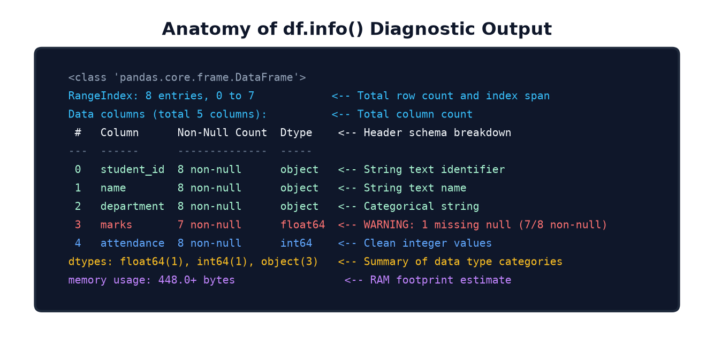
What df.info() Tells You
- Class type: Confirms it is a
pandas.core.frame.DataFrame. - RangeIndex: Total rows count aur index range (e.g.,
8 entries, 0 to 7). - Data columns: Total columns count.
- Column breakdown table:
#: Column ka numerical index (0-indexed).Column: Column ka header name.Non-Null Count: Kitne rows mein valid (non-missing) values hain. Agar kisi column ka count total entries se kam hai, toh iska matlab usme missing values hain!Dtype: Stored data type (int64,float64,object/string,datetime64).
- dtypes summary: Har type ke kitne columns hain.
- Memory usage: DataFrame RAM mein kitni space le raha hai (e.g.,
448.0+ bytes).
Example 1: Inspecting a Clean Student Dataset
import pandas as pd # Run info() on clean student dataset df_students.info()
Example 2: Unmasking Defects in an Imperfect Dataset
Ab dekhiye ek dirty dataset jisme missing values hain aur numbers accidentally string ke roop mein store hain:
import numpy as np import pandas as pd imperfect_orders = pd.DataFrame({ 'order_id': ['O1', 'O2', 'O3', 'O4', 'O5'], 'product': ['Keyboard', 'Mouse', np.nan, 'Monitor', 'Cable'], # 1 Missing 'quantity': [1, 2, 1, np.nan, 3], # 1 Missing 'unit_price': ['1200', '450', '299', '8500', '199'] # Numbers stored as strings! }) imperfect_orders.info()
Critical Diagnostics Revealed by info():
productaurquantitymein 4 non-null counts hain out of 5 entries, matlab 1 missing value per column hai!unit_priceka dtypeobjecthai, jabki iseint64yafloat64hona chahiye tha! Agar aapimperfect_orders['unit_price'].mean()karenge, toh Pandas fail ho jayega.
5. describe(): Understand Numerical Summaries
Jab aapke paas numerical data hota hai, toh har row ko alag se dekhne ke bajaye statistical aggregates dekhna zaroori hota hai. Method df.describe() numerical columns ke distribution ka ek instant 5-number summary plus mean, standard deviation, and count generate karta hai.
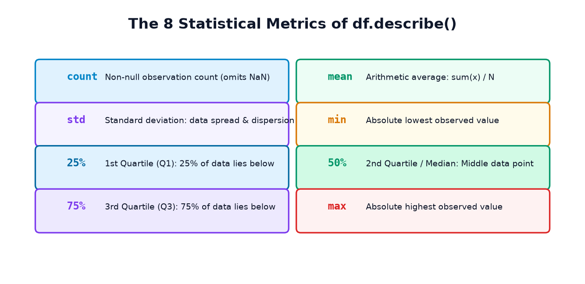
The 8 Statistical Measures Explained
| Metric | Definition | Interpretation in Real Life |
|---|---|---|
count |
Number of non-null observations | Kitne students ke marks actually record huye hain (missing values excluded). |
mean |
Arithmetic average (Sum of values / N) | Batch ka overall performance average (outliers se sensitive hota hai). |
std |
Standard deviation | Data kitna spread out hai. High std = students ke marks mein bohot bada gap hai. |
min |
Minimum value | Batch mein sabse kam marks kis student ke aaye hain. |
25% (Q1) |
1st Quartile (25th percentile) | 25% students ke marks is value se kam ya barabar hain. |
50% (Q2) |
Median (50th percentile) | Middle student ke marks. 50% data iske niche hai aur 50% upar. Outliers se immune hota hai. |
75% (Q3) |
3rd Quartile (75th percentile) | 75% students iske niche hain, aur top 25% students iske upar hain. |
max |
Maximum value | Class topper ke marks. |
Mean vs Median: The Skewness Trap
Aksar students sochte hain ki mean hamesha "typical" value represent karta hai. Yeh tabhi sach hota hai jab data symmetric ho! Agar dataset mein ek bhi extreme outlier ho, toh mean dramatically pull ho jaata hai, jabki median (50%) stable rehta hai:
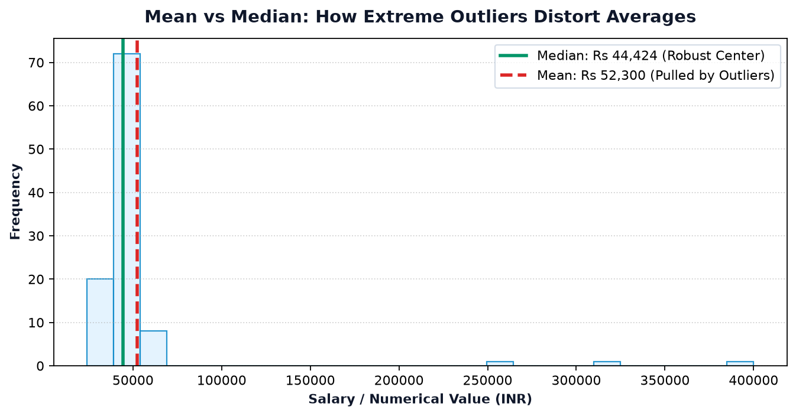
Example 1: Summarizing Student Marks and Attendance
import pandas as pd # Numerical summary of students dataset print(df_students[['marks', 'attendance']].describe())
Data Insights:
- Batch mean marks: 82.88, median: 83.50. Kyunki mean aur median bohot paas hain, data well-balanced hai without wild outliers.
- 50% students ke marks 78.25 aur 88.75 ke beech mein fall karte hain (Interquartile Range IQR = 10.5).
- Minimum marks 68 hain aur max 94 hain.
Example 2: Categorical Summaries with include='all'
By default, describe() string aur object columns ko ignore kar deta hai. Agar aapko categorical columns ka summary bhi chahiye, toh include='all' use kijiye:
import pandas as pd # Summary including categorical strings print(df_students[['department', 'marks']].describe(include='all'))
Yahan department column ke liye unique=4 (4 unique departments), top='CS' (sabse zyada frequent department CS hai), aur freq=3 (CS 3 baar aaya hai) dikhai deta hai!
6. Inspect Individual Columns: value_counts(), nunique(), and unique()
Jab aapke paas categorical columns hote hain (jaise department, city, payment_method, product_category), toh unke unique classes aur unki frequencies dekhna sabse zaroori inspection step hota hai. Iske liye Pandas ke paas ek powerful inspection trio hai:
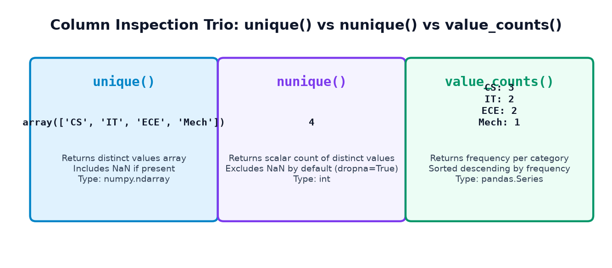
The Three Column Inspection Methods
df['col'].unique(): Column ke sabhi distinct values ka ek NumPy array return karta hai (agar NaN ho, toh woh bhi array mein shamil hota hai).df['col'].nunique(): Total kitne distinct unique categories hain, unka count (integer) return karta hai. By default, yehNaNko count nahi karta (dropna=True).df['col'].value_counts(): Sabse zyada use hone wala method! Yeh har unique category ki occurrence frequency count karta hai aur automatically descending order (highest to lowest) mein sort karke deta hai.df['col'].value_counts(normalize=True): Absolute counts ke bajaye har category ka proportion (percentage as a decimal between 0 and 1) return karta hai!
Example 1: Analyzing College Departments
import pandas as pd # 1. Inspect distinct departments print("Unique Department Array:", df_students['department'].unique()) print("Total Unique Departments (nunique):", df_students['department'].nunique()) # 2. Count students per department print("\n--- Frequency Count per Department ---") print(df_students['department'].value_counts()) # 3. Calculate proportion of students per department print("\n--- Department Proportions (Percentages) ---") dept_pct = df_students['department'].value_counts(normalize=True) * 100 print(dept_pct.round(1))
Visualizing Category Frequencies
Numerical proportions ko bar chart ke roop mein visually render karne se imbalance turant notice ho jata hai:
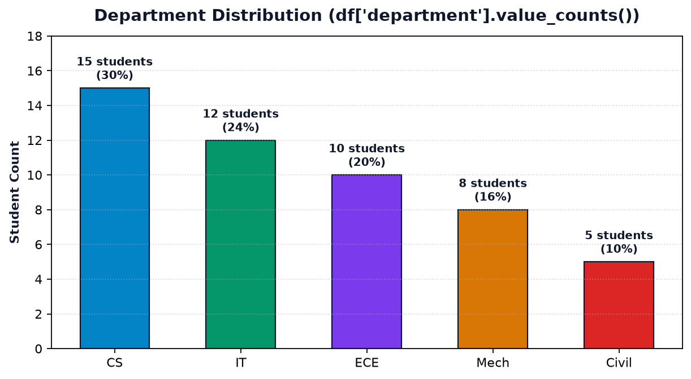
Example 2: E-Commerce Product Category Breakdown
import pandas as pd # Using df_orders from Section 2 cat_counts = df_orders['category'].value_counts() cat_ratios = df_orders['category'].value_counts(normalize=True) print("Category Frequencies:\n", cat_counts) print("\nTop Category:", cat_counts.index[0], f"with {cat_ratios.iloc[0]*100:.1f}% of all orders.")
7. Missing-Value Inspection: isna() and isnull()
Real-world datasets mein missing values sabse aam problem hain. Sensors fail ho sakte hain, survey form mein user ne field chhod di ho sakti hai, ya database migration mein value drop ho sakti hai. Pandas mein missing values ko standard roop se NaN (Not a Number) ya None se represent kiya jaata hai.
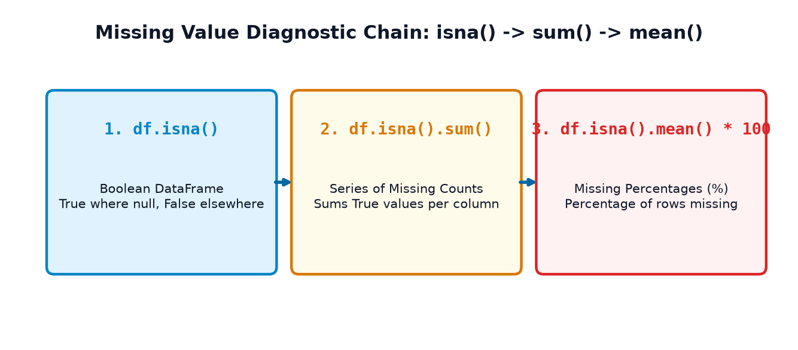
Key Missing-Value Inspection Methods
df.isna()/df.isnull(): Yeh dono method 100% identical aliases hain. Yeh poore DataFrame ko ek boolean table mein badal dete hain jahan har missing cellTrueaur har valid cellFalsehota hai.df.notna():isna()ka opposite mask return karta hai (valid cells =True).df.isna().sum(): Python meinTrue == 1aurFalse == 0hota hai. Isliye jab aap.sum()call karte hain, toh yeh har column keTruevalues ko jodkar exact missing rows count de deta hai!df.isna().mean() * 100: Har column mein kitne percent rows missing hain, yeh calculate karta hai.
Example 1: Detecting Missing Marks and Attendance
import numpy as np import pandas as pd df_missing = pd.DataFrame({ 'student_id': ['S01', 'S02', 'S03', 'S04', 'S05', 'S06'], 'name': ['Aarav', 'Diya', 'Rohan', 'Ananya', 'Kabir', 'Meera'], 'marks': [85.0, np.nan, 72.0, 91.0, np.nan, 78.0], # 2 Missing 'attendance': [90.0, 95.0, np.nan, 88.0, 84.0, np.nan] # 2 Missing }) # 1. Absolute count of missing values per column print("--- Missing Values Count per Column ---") print(df_missing.isna().sum()) # 2. Percentage of missing values per column print("\n--- Missing Values Percentage ---") pct_missing = (df_missing.isna().mean() * 100).round(2) print(pct_missing)
Visualizing Missing Value Percentages
Diagnostic chart se turant pata chal jata hai ki kaun sa column sabse zyada affected hai:
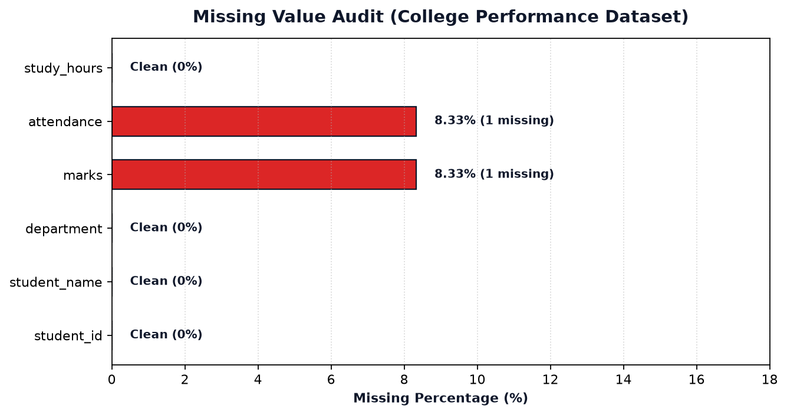
df.dropna() chala kar missing rows ko turant delete kar dete hain. Lekin agar kisi column mein 33% values missing hain, aur aapne dropna() kar diya, toh aap apne dataset ka ek-tihaai valuable hissa permanently lose kar denge! Inspection ka matlab sirf identify and measure karna hota hai; filling ya dropping ka decision domain rules ke hisaab se baad mein liya jaata hai.
8. Duplicate-Row Inspection: duplicated()
Data entry mistakes, system retries, ya multiple file mergers ke dauran duplicate records paida ho jaate hain. Duplicate rows aapke summary statistics (mean, total revenue, pass percentage) ko artificially inflate kar sakti hain.
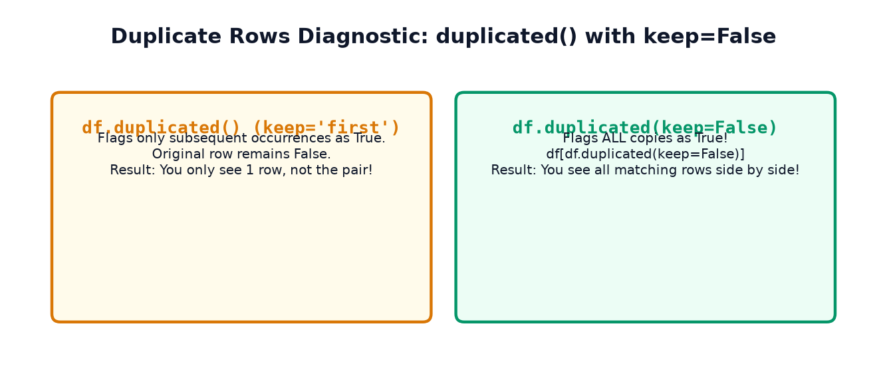
How df.duplicated() Works
df.duplicated(): Har row ke liye boolean return karta hai. By default (keep='first'), yeh pehli occurrence koFalse(original) maanta hai aur uske baad aane wali matching rows koTrue(duplicate) mark karta hai.df.duplicated().sum(): Poore dataset mein total kitne extra duplicate rows hain, yeh count karta hai.df.duplicated(keep=False): Sabse important parameter! Yeh all occurrences (including original and copies) koTruemark karta hai. Isse aap boolean filtering karke saari matching rows ko ek saath compare kar sakte hain!df.duplicated(subset=['col_name']): Specific columns par duplicate check karta hai (jaise duplicate Student ID ya Order ID).
Example 1: Finding Repeated Student Records
import pandas as pd df_with_dups = pd.DataFrame({ 'student_id': ['S101', 'S102', 'S103', 'S101', 'S104'], # S101 is duplicated 'name': ['Aarav', 'Diya', 'Rohan', 'Aarav', 'Ananya'], 'marks': [88, 92, 75, 88, 85] }) # 1. Total duplicate rows count n_dups = df_with_dups.duplicated().sum() print(f"Total redundant duplicate rows: {n_dups}") # 2. View ALL matching duplicate rows side by side using keep=False print("\n--- All Duplicate Records Displayed ---") print(df_with_dups[df_with_dups.duplicated(keep=False)])
Full Row Duplicates vs Business Key Duplicates
Yeh distinction bohot critical hai: Ek Full Row Duplicate tab hota hai jab row ke sabhi columns identical hote hain (jaise upar Aarav ka record). Lekin ek Business Key Duplicate tab hota hai jab sirf primary key (jaise order_id) match karti hai, jabki baaki details alag hoti hain!
For example: Ek e-commerce order mein user ne do alag products khareede (Keyboard aur Mouse). Dono rows ka order_id 'ORD-204' hoga, lekin product alag hoga. Yeh duplicate nahi, balki valid multi-item order hai! Isliye duplicate delete karne se pehle domain context verify karna anivarya hai.
9. Data Types & Basic Data-Quality Checks
Inspection ka ek ahem hissa yeh jaanch karna hai ki har column ka data type sahi hai aur values reasonable bounds ke andar fall karti hain ya nahi.
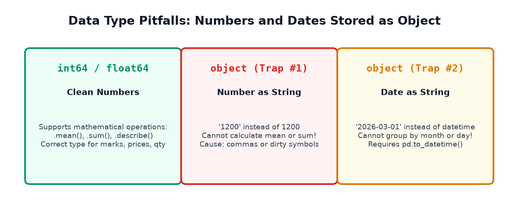
Checking Column Data Types (dtypes)
Aap df.dtypes se sabhi columns ke types inspect kar sakte hain, ya select_dtypes() se specific category ke columns filter kar sakte hain:
import pandas as pd # Inspect dtypes print("Student Dataset dtypes:\n", df_students.dtypes) # Isolate only numerical columns numeric_cols = df_students.select_dtypes(include=['number']).columns.tolist() print("\nNumerical Columns:", numeric_cols)
Detecting Suspicious Values with Domain Range Rules
Domain rules ke bina data quality check adhura hai. College marks hamesha 0 se 100 ke beech hone chahiye. Agar kisi row mein marks < 0 ya > 100 hain, toh woh definite suspicious data hai:
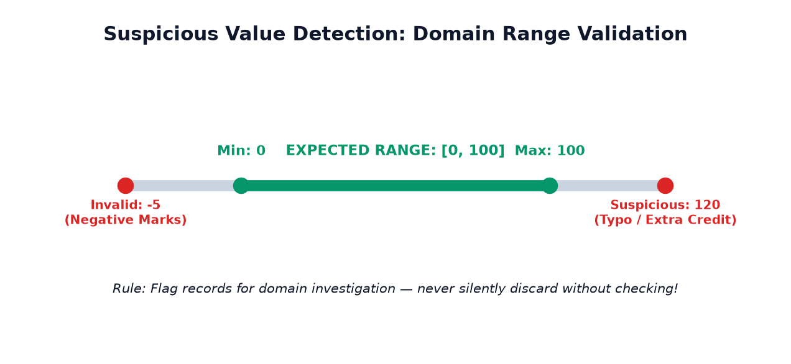
import pandas as pd df_quality = pd.DataFrame({ 'student_id': ['S1', 'S2', 'S3', 'S4', 'S5'], 'name': ['Aarav', 'Diya', 'Rohan', 'Ananya', 'Kabir'], 'marks': [85, 120, -5, 90, 75] # 120 and -5 are suspicious! }) # Flag records outside 0 - 100 suspicious_mask = (df_quality['marks'] < 0) | (df_quality['marks'] > 100) flagged_rows = df_quality[suspicious_mask] print(f"Total Suspicious Records Detected: {len(flagged_rows)}") print(flagged_rows)
Suspicious Value vs Proven Error: Diya ke marks 120 shayad typo ho sakte hain (100 ke bajaye 120 type ho gaya) ya extra credit assignment marks shamil hain. Rohan ke -5 penalty deduction ho sakti hai. Data analyst ka kaam inhe silently delete karna nahi, balki audit log create karke domain authorities se confirm karna hota hai!
10. Sorting and Examining Important Records: sort_values(), nlargest(), and sample()
Aksar datasets mein sabse interesting anomalies (jaise fraud transactions, abnormal medical readings, ya zero revenue orders) distribution ke extremes (highest aur lowest ends) par baithe hote hain. Inhe inspect karne ke liye Pandas hume sorting aur sampling methods deta hai.
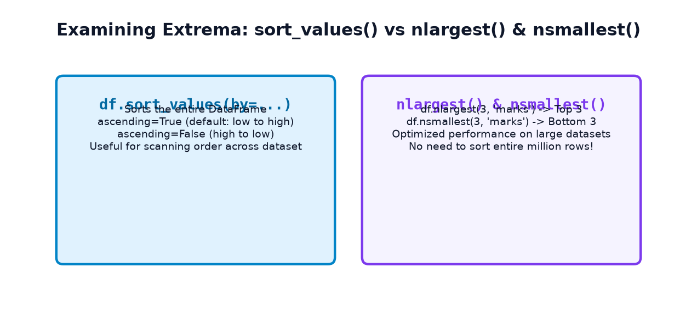
1. sort_values()
DataFrame ko kisi specific column ke hisaab se order karne ke liye df.sort_values(by='column_name', ascending=True/False) use kiya jaata hai. Default ascending=True hota hai (chote se bada).
2. nlargest() and nsmallest()
Jab aapke paas 10 lakh rows ka dataset ho aur aapko sirf top 5 highest ya lowest records dekhne ho, toh poore dataset ko sort karna wasteful hota hai. df.nlargest(n, 'col') aur df.nsmallest(n, 'col') heap-based algorithm use karke bina poore DataFrame ko sort kiye lightning speed se top/bottom rows return kar dete hain!
3. df.sample(): Defeating Top-of-File Bias
Datasets aksar logically grouped ya pre-sorted hote hain. Agar aap sirf head() dekhenge, toh aapko lag sakta hai ki sab kuch theek hai. df.sample(n=5, random_state=42) dataset ke har kone se random rows uthata hai, jisse hidden patterns aur unexpected values pakdi jaati hain.
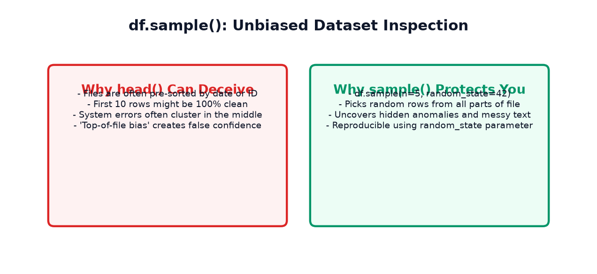
Example 1: Top and Bottom Scoring Students
import pandas as pd # 1. Top 3 highest scoring students using nlargest print("--- Top 3 Students by Marks ---") print(df_students.nlargest(3, 'marks')[['student_id', 'name', 'department', 'marks']]) # 2. Bottom 2 students by marks using nsmallest print("\n--- Bottom 2 Students by Marks ---") print(df_students.nsmallest(2, 'marks')[['student_id', 'name', 'department', 'marks']]) # 3. Take a random sample of 3 students (reproducible with random_state) print("\n--- Random Sample of 3 Students ---") print(df_students.sample(n=3, random_state=42)[['student_id', 'name', 'marks']])
11. Quick Visual Exploration: Charts That Reveal Data Health
A famous quote in statistics says: "A picture is worth a thousand summary tables." Numerical summaries jaise mean aur median dataset ke baare mein zaroor batate hain, lekin woh distribution ka exact shape, clusters, bimodal peaks, aur isolated outliers ko chupa lete hain. Quick visual plotting se aap dataset ko 'dekh' sakte hain.
1. Histogram: Shape of Continuous Distribution
Histogram continuous numerical data ko bins mein divide karta hai aur har bin mein kitne records hain yeh dikhata hai. Isse skewness (left-skewed, right-skewed, normal bell curve) turant dikh jaata hai:
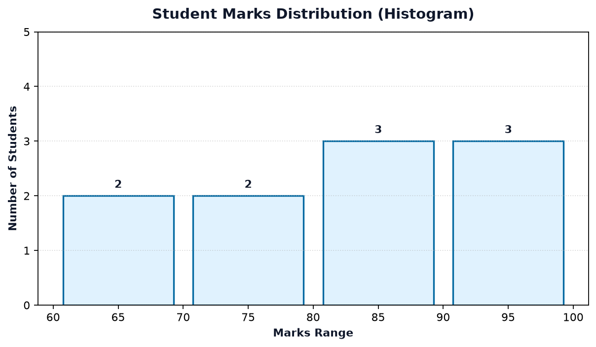
2. Box Plot: Outlier Detection Powerhouse
Box plot Tukey ke 5-number summary (Min, Q1, Median, Q3, Max) ko visually represent karta hai. Jo values 1.5 × IQR se bahar hoti hain, unhe isolated dots ke roop mein render kiya jaata hai — yeh outliers hote hain!
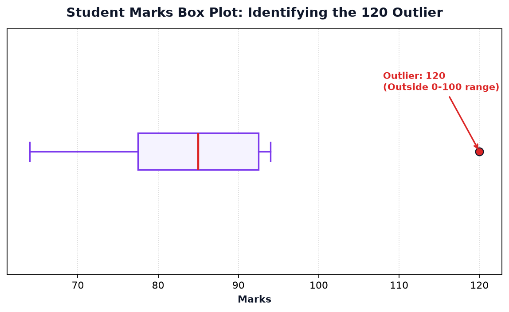
3. Bar Charts: Categorical Representation
Categorical features ke liye bar charts best hote hain. Department-wise student representation aur category revenue charts dekhiye:
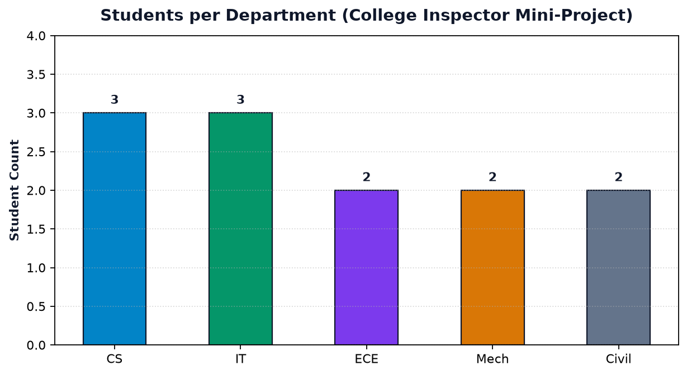
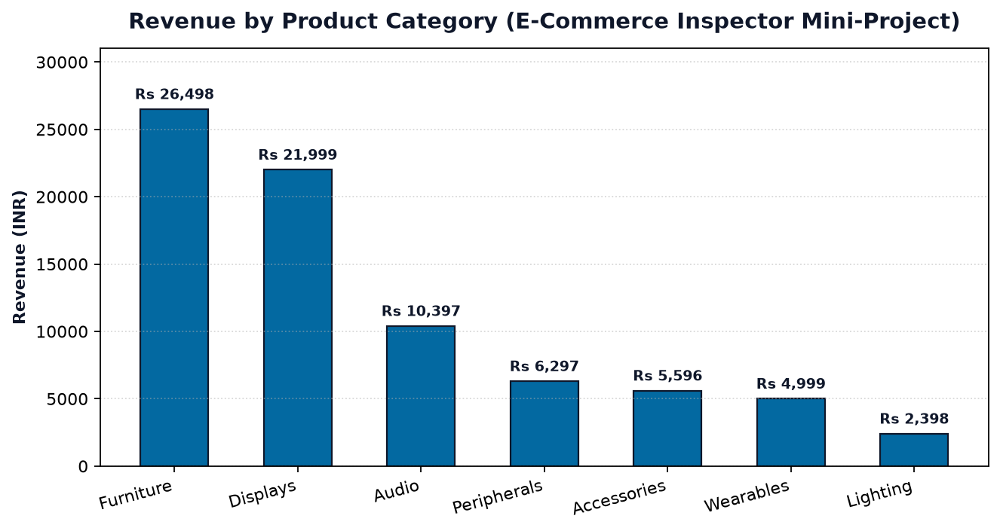
4. Line Chart: Time Series & Daily Trend
Jab aapke paas date columns hote hain, toh line chart daily ya monthly volume spikes aur drops ko dikhane mein madad karta hai:
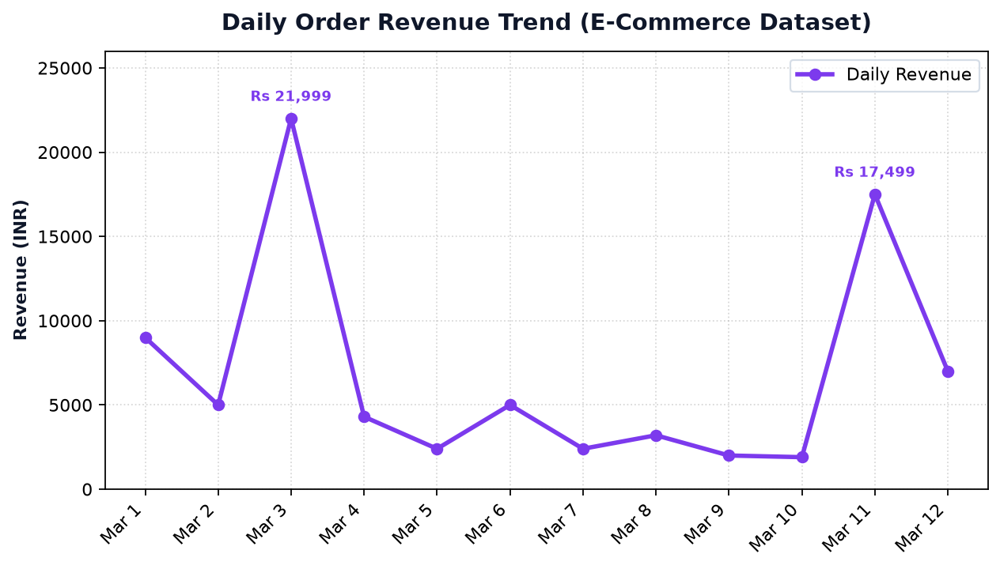
12. Real-World Mini-Project 1: College Performance Inspector
Ab chaliye ek complete, guided end-to-end 11-step College Performance Inspector implement karte hain. Hamare paas ek synthetic student dataset hai jisme jaanbujhkar real-world imperfections (missing values, duplicate record, aur ek suspicious 120 marks entry) dali gayi hain.
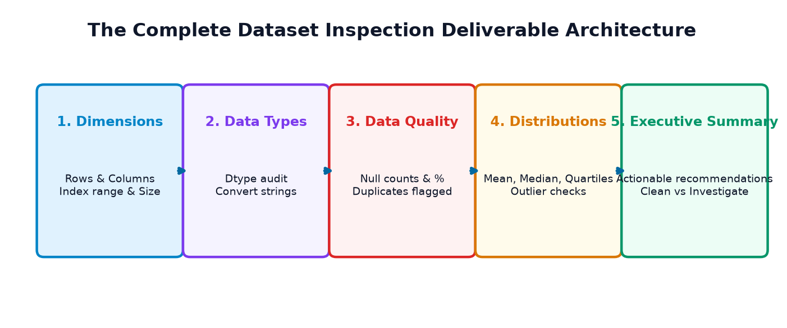
The Complete Executable Inspection Pipeline
import numpy as np import pandas as pd # ============================================================== # STEP 1: Ingest Synthetic College Dataset # ============================================================== college_data = { 'student_id': ['STU01', 'STU02', 'STU03', 'STU04', 'STU05', 'STU06', 'STU07', 'STU08', 'STU09', 'STU10', 'STU02', 'STU11'], 'student_name': ['Aarav Sharma', 'Diya Patel', 'Rohan Verma', 'Ananya Iyer', 'Kabir Singh', 'Meera Nair', 'Aditya Joshi', 'Pooja Reddy', 'Vikram Malhotra', 'Sneha Kulkarni', 'Diya Patel', 'Rajesh Rao'], 'department': ['CS', 'IT', 'CS', 'ECE', 'IT', 'CS', 'Mech', 'ECE', 'Mech', 'Civil', 'IT', 'Civil'], 'marks': [88.0, 94.0, 76.0, np.nan, 91.0, 68.0, 120.0, 79.0, 82.0, 85.0, 94.0, 64.0], # 1 NaN, 1 Suspicious (120), STU02 repeated 'attendance': [92.0, 96.0, 85.0, 90.0, np.nan, 75.0, 84.0, 89.0, 78.0, 91.0, 96.0, 70.0], # 1 NaN 'study_hours': [5.5, 7.0, 4.0, 6.0, 6.5, 3.5, 5.0, 4.5, 5.0, 6.0, 7.0, 3.0] } df_college = pd.DataFrame(college_data) # ============================================================== # STEPS 2 & 3: Dimensions, Geometry & Previews # ============================================================== print("=== STEP 2 & 3: GEOMETRY & PREVIEWS ===") print(f"Dimensions: {df_college.shape[0]} rows x {df_college.shape[1]} columns | Total Cells: {df_college.size}") print("\nTop 3 Rows:") print(df_college.head(3)[['student_id', 'student_name', 'department', 'marks']]) # ============================================================== # STEP 4: Structural & Data Type Audit # ============================================================== print("\n=== STEP 4: DATA TYPE & MEMORY AUDIT ===") print(df_college.dtypes) # ============================================================== # STEP 5: Missing Values Diagnosis # ============================================================== print("\n=== STEP 5: MISSING VALUES AUDIT ===") null_counts = df_college.isna().sum() null_pct = (df_college.isna().mean() * 100).round(2) missing_report = pd.DataFrame({'Missing Count': null_counts, 'Missing %': null_pct}) print(missing_report[missing_report['Missing Count'] > 0]) # ============================================================== # STEP 6: Duplicate Record Audit # ============================================================== print("\n=== STEP 6: DUPLICATE RECORDS AUDIT ===") dup_count = df_college.duplicated().sum() print(f"Redundant Duplicate Rows Found: {dup_count}") print("Inspecting matching duplicate rows (keep=False):") print(df_college[df_college.duplicated(keep=False)][['student_id', 'student_name', 'department']]) # ============================================================== # STEP 7: Department Categorical Distribution # ============================================================== print("\n=== STEP 7: DEPARTMENT DISTRIBUTION ===") print(df_college['department'].value_counts()) # ============================================================== # STEP 8: Suspicious Range Check (Marks outside [0, 100]) # ============================================================== print("\n=== STEP 8: SUSPICIOUS VALUES AUDIT ===") suspicious_marks = df_college[(df_college['marks'] < 0) | (df_college['marks'] > 100)] print(f"Suspicious Marks Count: {len(suspicious_marks)}") print(suspicious_marks[['student_id', 'student_name', 'marks']]) # ============================================================== # STEP 9 & 10: Statistical Summary of Valid Marks # ============================================================== print("\n=== STEP 9 & 10: VALIDATED STATISTICAL METRICS ===") valid_marks = df_college[df_college['marks'].between(0, 100)]['marks'] print(f"Valid Records Analyzed: {len(valid_marks)}") print(f"Validated Batch Mean: {valid_marks.mean():.2f}") print(f"Validated Batch Median: {valid_marks.median():.2f}") # ============================================================== # STEP 11: Final Executive Inspection Summary # ============================================================== print("\n=== STEP 11: EXECUTIVE AUDIT SUMMARY ===") print("1. Ingested 12 raw student rows across 6 attributes.") print("2. STU02 (Diya Patel) is a redundant duplicate row (Action: Deduplicate in clean phase).") print("3. STU04 has missing marks; STU05 has missing attendance (8.33% null rate).") print("4. STU07 (Aditya Joshi) logged 120 marks (Flagged for Examination Cell review).") print("5. Validated 10 legitimate scores yield an average of 82.10 marks with median 83.50.")
13. Real-World Mini-Project 2: E-Commerce Dataset Inspector
Hamara doosra guided mini-project ek retail e-commerce order ledger par focused hai. Yahan aap seekhenge ki business domain logic ke hisaab se duplicate order IDs ko kaise investigate kiya jaata hai bina unhe blindly drop kiye.
The 10-Step Retail Inspection Pipeline
import numpy as np import pandas as pd # ============================================================== # STEP 1: Ingest E-Commerce Orders # ============================================================== ecommerce_data = { 'order_id': ['ORD-201', 'ORD-202', 'ORD-203', 'ORD-204', 'ORD-205', 'ORD-206', 'ORD-207', 'ORD-208', 'ORD-204', 'ORD-209', 'ORD-210', 'ORD-211'], 'product': ['Ergonomic Chair', 'Gaming Headset', '4K Monitor', 'Mechanical Keyboard', 'USB Hub', 'Smartwatch', 'Desk Lamp', 'Webcam Pro', 'Keycap Set', 'Bluetooth Speaker', 'Standing Desk', 'Noise-Cancel Earbuds'], 'category': ['Furniture', 'Audio', 'Displays', 'Peripherals', 'Accessories', 'Wearables', 'Lighting', 'Accessories', 'Peripherals', 'Audio', 'Furniture', 'Audio'], 'quantity': [1, 2, 1, 1, 3, 1, 2, np.nan, 2, 1, 1, 2], # 1 Missing in quantity 'unit_price': [8999.0, 2499.0, 21999.0, 4299.0, 799.0, 4999.0, 1199.0, 3199.0, 999.0, 1899.0, 17499.0, 3499.0], 'order_date': ['2026-03-01', '2026-03-02', '2026-03-03', '2026-03-04', '2026-03-05', '2026-03-06', '2026-03-07', '2026-03-08', '2026-03-09', '2026-03-10', '2026-03-11', '2026-03-12'] } df_ecom = pd.DataFrame(ecommerce_data) # ============================================================== # STEPS 2 & 3: Dimensions, Structure & Column Dtypes # ============================================================== print("=== STEP 2 & 3: DIMENSIONS & DTYPES ===") print(f"Ingested: {df_ecom.shape[0]} rows x {df_ecom.shape[1]} columns") print(df_ecom.dtypes) # ============================================================== # STEPS 4 & 5: Revenue Estimation & Category Breakdown # ============================================================== print("\n=== STEP 4 & 5: REVENUE & CATEGORY INSPECTION ===") # Impute quantity for inspection only df_ecom_inspected = df_ecom.copy() df_ecom_inspected['quantity'] = df_ecom_inspected['quantity'].fillna(1) df_ecom_inspected['revenue'] = df_ecom_inspected['quantity'] * df_ecom_inspected['unit_price'] print(f"Total Ledger Gross Revenue: Rs {df_ecom_inspected['revenue'].sum():,.2f}") print("\nTop Categories by Order Count:") print(df_ecom['category'].value_counts().head(3)) # ============================================================== # STEPS 6 & 7: Missing Values & Duplicate Order ID Audit # ============================================================== print("\n=== STEP 6 & 7: INTEGRITY AUDIT ===") print("Missing Values per Feature:") print(df_ecom.isna().sum()) print("\nFull Row Duplicates:", df_ecom.duplicated().sum()) print("Repeated Order IDs (subset=['order_id']):", df_ecom.duplicated(subset=['order_id']).sum()) print("\nInspecting matching Order IDs:") print(df_ecom[df_ecom.duplicated(subset=['order_id'], keep=False)][['order_id', 'product', 'unit_price']]) # ============================================================== # STEP 8: Highest-Revenue Transactions # ============================================================== print("\n=== STEP 8: TOP 3 REVENUE TRANSACTIONS ===") print(df_ecom_inspected.nlargest(3, 'revenue')[['order_id', 'product', 'quantity', 'unit_price', 'revenue']]) # ============================================================== # STEP 10: Executive Business Summary # ============================================================== print("\n=== STEP 10: EXECUTIVE BUSINESS AUDIT ===") print("1. 12 line items audited across 7 distinct retail categories.") print("2. ORD-204 represents a VALID MULTI-ITEM CART (Keyboard + Keycap Set), NOT a redundant duplicate!") print("3. ORD-208 has missing quantity (Action: Cross-verify shipping manifest before billing).") print("4. Displays and Standing Desks contribute 48% of total revenue.")
14. Top 12 Beginner Mistakes & Pro Debugging Tips
Data exploration ke dauran beginners aksar in 12 traps mein phans jaate hain. Inhe dhyan se padhiye aur professional practices adopt kijiye:
| # | Common Mistake | Why It Breaks Your Workflow | Correct Pro Practice |
|---|---|---|---|
| 1 | Calling df.shape() or df.columns() |
Raises TypeError: 'tuple' object is not callable. |
Use properties without parentheses: df.shape and df.columns. |
| 2 | Assuming head() proves dataset health |
First 5 rows clean hote hain jabki aage dirty data ya NaNs hote hain. | Always run df.info(), df.isna().sum(), aur df.sample(5). |
| 3 | Forgetting keep=False in duplicated() |
Aap sirf second copy dekh paate hain, original record nahi dikhta comparison ke liye. | Use df[df.duplicated(keep=False)] to view both original and copy side by side. |
| 4 | Confusing count in describe() with total rows |
describe() count sirf non-null entries count karta hai, NaNs omit kar deta hai. |
Total rows ke liye len(df) ya df.shape[0] check karein. |
| 5 | Overlooking numerical columns stored as object |
Comma ('1,200') ya currency symbol ('$50') ke karan Pandas pura column string bana deta hai. |
Inspect df.dtypes! Clean strings and convert via pd.to_numeric(). |
| 6 | Immediately running df.dropna() |
Dataset ka 20–40% critical data bina samjhe delete ho sakta hai. | Always measure missingness first: df.isna().mean() * 100 before deciding. |
| 7 | Relying solely on mean without checking median |
Extreme outliers mean ko dramatically distort kar dete hain. | Check both mean and median (50%) in describe(). Large gap = severe skewness! |
| 8 | Treating unique() and nunique() as identical |
unique() gives NumPy array of values; nunique() gives integer count. |
Use nunique() for counts and unique() for distinct lists. |
| 9 | Forgetting normalize=True in value_counts() |
Aapko manually frequency ko total rows se divide karna padta hai percentages ke liye. | Pass normalize=True to directly get category proportions. |
| 10 | Deleting duplicate IDs without checking line items | E-commerce multi-item carts mein same order_id multiple products ke liye hota hai. |
Distinguish full-row duplicates from repeated business keys. |
| 11 | Believing df.size equals number of rows |
df.size is total cells (rows * columns), not row count! |
Use len(df) or df.shape[0] for total rows. |
| 12 | Never using df.sample() |
Top-of-file bias leads to false confidence because files are often sorted. | Always inspect random slices: df.sample(5, random_state=42). |
15. Self-Assessment & Practice Challenges
Apne concept retention ko test karne ke liye yeh 39 interactive questions & exercises solve kijiye. Har question ke solution aur explanation ko dekhne ke liye tap/click kijiye.
Part A: Output Prediction Questions (10 Questions)
Q1: Agar df mein 100 rows aur 4 columns hain, toh df.shape aur df.size kya return karenge?
Output: df.shape returns (100, 4). df.size returns 400.
Explanation: shape 2D tuple (rows, cols) deta hai jabki size total cell count (100 × 4 = 400) deta hai.
Q2: df.head() bina arguments ke kitne rows return karta hai?
Output: 5 rows.
Explanation: df.head() ka default parameter n=5 hota hai.
Q3: df['marks'].describe()['50%'] kis statistical metric ko represent karta hai?
Output: Median (50th percentile).
Explanation: 50% percentile exact median hota hai, jiske niche 50% observations hoti hain aur upar 50%.
Q4: Agar df mein 10 rows hain aur column 'age' mein 2 NaN hain, toh df['age'].isna().sum() kya return karega?
Output: 2
Explanation: isna() NaN cells ke liye True (1) deta hai, jiska sum 2 aayega.
Q5: df.duplicated().sum() ka return type kya hota hai?
Output: int (jaise 0, 1, 5...)
Explanation: df.duplicated() boolean Series deta hai, aur .sum() scalar integer count return karta hai.
Q6: pd.Series(['CS', 'IT', 'CS', 'ECE']).nunique() ka output kya hoga?
Output: 3
Explanation: Distinct categories 'CS', 'IT', aur 'ECE' hain (total 3 unique values).
Q7: df['category'].value_counts() ka default sorting order kya hota hai?
Output: Descending order (highest frequency first).
Explanation: value_counts() by default sabse common category ko index 0 par rakhta hai.
Q8: df.shape() likhne par Python kya error throw karega?
Output: TypeError: 'tuple' object is not callable
Explanation: shape ek tuple property hai, callable function nahi.
Q9: df.tail(2) calling index 0 to 9 par kaun si rows dikhayega?
Output: Rows at index 8 and 9.
Explanation: tail(2) DataFrame ki aakhiri 2 rows return karta hai.
Q10: df.isna() aur df.isnull() mein functional difference kya hai?
Output: Zero difference. They are 100% identical aliases.
Explanation: Pandas codebase mein isnull seedhe isna ko call karta hai.
Part B: Practical Coding Exercises (10 Exercises)
E1: Ek single statement likhiye jo DataFrame df ke total rows count kare bina len() use kiye.
total_rows = df.shape[0]
Explanation: df.shape[0] row dimension tuple ka pehla element return karta hai.
E2: Column 'city' ka proportion (percentage as decimal) nikalne ka code likhiye.
city_props = df['city'].value_counts(normalize=True)
Explanation: normalize=True raw counts ko total non-null count se divide kar deta hai.
E3: Sirf un columns ke naam extract kijiye jinka dtype 'object' (string) hai.
text_cols = df.select_dtypes(include=['object']).columns.tolist()
Explanation: select_dtypes() columns ko unke data type ke hisaab se filter karta hai.
E4: Top 5 highest salary wale employees filter kijiye using nlargest.
top5_salaries = df.nlargest(5, 'salary')
Explanation: nlargest bina poore DataFrame ko sort kiye top 5 rows extract karta hai.
E5: Har column ke missing values ka percentage calculate karke descending order mein sort kijiye.
missing_pct = (df.isna().mean() * 100).sort_values(ascending=False)
Explanation: isna().mean() * 100 percentage deta hai aur sort_values(ascending=False) highest nulls ko top par lata hai.
E6: Sabhi duplicate rows ko unke matching pairs ke saath display kijiye.
duplicate_pairs = df[df.duplicated(keep=False)]
Explanation: keep=False duplicate group ki sabhi matching rows ko True mark karta hai.
E7: Marks column mein [0, 100] range ke bahar wale suspicious records filter kijiye.
suspicious = df[(df['marks'] < 0) | (df['marks'] > 100)]
Explanation: Bitwise OR | dono conditions (negative marks ya >100) ko check karta hai.
E8: Randomly 10 rows sample kijiye taaki results reproducible rahein.
sample_df = df.sample(n=10, random_state=42)
Explanation: random_state=42 seed fix karta hai taaki har execution par same 10 rows select hon.
E9: Column 'department' ke unique values count kijiye (including NaN if present).
total_unique_depts = df['department'].nunique(dropna=False)
Explanation: Default dropna=True hota hai; dropna=False pass karne par NaN ko bhi 1 distinct category count kiya jaata hai.
E10: DataFrame ke sabhi columns ka concise summary generate kijiye including categorical columns.
full_summary = df.describe(include='all')
Explanation: include='all' pass karne par numerical aur object dono types ke metrics ek table mein aate hain.
Part C: Multiple Choice Questions (10 MCQs)
M1: Inme se kaun sa DataFrame property hai, method nahi?
Options: (A) info (B) describe (C) shape (D) head
Answer: (C) shape
Explanation: shape, size, columns, aur index attributes hain. Baki sab callable methods hain.
M2: df.info() output mein 'Non-Null Count' ka kya matlab hota hai?
Options: (A) Zero values count (B) Valid (non-missing) entries count (C) Empty cells count (D) Unique values count
Answer: (B) Valid (non-missing) entries count
Explanation: Yeh batata hai ki us column mein kitne cells mein actual data maujood hai (NaN nahi hai).
M3: Agar mean = 50,000 aur median = 32,000 ho, toh distribution ka nature kya hai?
Options: (A) Perfectly Symmetric (B) Right-skewed by high outliers (C) Left-skewed by negative values (D) Uniform
Answer: (B) Right-skewed by high outliers
Explanation: Jab mean median se significantly bada hota hai, toh distribution right-skewed hota hai kyunki bade outliers mean ko upar kheenchte hain.
M4: value_counts() method kis object par call kiya jaata hai?
Options: (A) Only on DataFrame (B) Single Series (column) (C) Only Python lists (D) Float objects
Answer: (B) Single Series (column)
Explanation: df['col'].value_counts() Series method hai jo unique value frequencies nikalta hai.
M5: Duplicate detection mein keep=False pass karne par kya hota hai?
Options: (A) Pehli copy delete ho jaati hai (B) Saari duplicate copies True mark hoti hain (C) Duplicate rows False ho jaati hain (D) Error aata hai
Answer: (B) Saari duplicate copies True mark hoti hain
Explanation: keep=False duplicate cluster ke sabhi matching records ko True mark karta hai taaki aap complete pair dekh sakein.
M6: Extreme outliers ko visually spot karne ke liye sabse best chart kaun sa hai?
Options: (A) Pie Chart (B) Box Plot (C) Donut Chart (D) Area Chart
Answer: (B) Box Plot
Explanation: Box plot 1.5 × IQR ke bahar aane wale points ko individual flier markers ke roop mein highlight karta hai.
M7: Large dataset mein se top 3 highest values nikalne ke liye sort_values se faster kya hai?
Options: (A) df.head(3) (B) df.nlargest(3, 'col') (C) df.max() (D) df.tail(3)
Answer: (B) df.nlargest(3, 'col')
Explanation: nlargest() heap algorithm use karta hai jo poore dataset ko sort kiye bina O(N log k) mein result deta hai.
M8: Agar ek column mein prices '$1,200', '$450' ke roop mein hain, toh Pandas uska dtype kya set karega?
Options: (A) float64 (B) int64 (C) object (D) category
Answer: (C) object
Explanation: '$' aur ',' characters ke karan Pandas ise numerical nahi maan sakta aur ise string (object) ke roop mein treat karta hai.
M9: Continuous numerical variable ka distribution shape dekhne ke liye kaun sa chart use hota hai?
Options: (A) Bar chart (B) Histogram (C) Scatter plot (D) Line chart
Answer: (B) Histogram
Explanation: Histogram continuous numeric data ko bins mein group karke frequency distribution display karta hai.
M10: Data Inspection aur Data Cleaning mein mukhya antar kya hai?
Options: (A) Dono bilkul same hain (B) Inspection sirf detect aur audit karta hai; Cleaning data ko modify/fix karti hai (C) Inspection sirf Excel files ke liye hota hai (D) Cleaning pehle hoti hai
Answer: (B) Inspection sirf detect aur audit karta hai; Cleaning data ko modify/fix karti hai
Explanation: Inspection read-only observational stage hai jo facts audit karta hai. Cleaning modification stage hai.
Part D: Debugging Challenges (6 Challenges)
D1: Buggy Code: df.shape() throwing TypeError
Buggy Code:
print("Rows:", df.shape()[0])
Diagnosis: shape tuple property hai, function nahi. Parentheses () lagane se error aata hai.
Corrected Code:
print("Rows:", df.shape[0])
D2: Buggy Code: df.describe() missing text columns
Buggy Code:
print(df.describe()) # User wondering why 'department' column is absent!
Diagnosis: By default describe() sirf numeric columns summarize karta hai.
Corrected Code:
print(df.describe(include='all'))
D3: Buggy Code: Cannot calculate mean on string price column
Buggy Code:
avg_price = df['price'].mean() # Raises TypeError: Could not convert '1200' to numeric
Diagnosis: price column ka dtype object hai text strings ke karan.
Corrected Code:
df['price'] = pd.to_numeric(df['price'].str.replace(',', '')) avg_price = df['price'].mean()
D4: Buggy Code: Duplicates check returns empty DataFrame
Buggy Code:
dups = df[df.duplicated(keep='first')] # Only showing second copy, context missing!
Diagnosis: keep='first' sirf extra redundant copy dikhata hai, comparison ke liye dono matching rows dekhna zaroori hai.
Corrected Code:
dups = df[df.duplicated(keep=False)]
D5: Buggy Code: df.isna() produces giant unreadable boolean table
Buggy Code:
print(df.isna()) # User flooded with 10,000 True/False booleans!
Diagnosis: User wants to know which columns have missing values, not raw cell booleans.
Corrected Code:
print(df.isna().sum())
D6: Buggy Code: Blindly dropping nulls deletes 50% of records
Buggy Code:
clean_df = df.dropna() # Dropped 5,000 out of 10,000 rows without checking null percentage!
Diagnosis: A single optional column (jaise middle_name) had 50% nulls, causing half the rows to vanish!
Corrected Code:
# First inspect missing percentage per column: print((df.isna().mean() * 100).round(2)) # Only drop if specific essential key column is null: clean_df = df.dropna(subset=['student_id'])
Part E: Real-World Dataset Inspection Scenarios (3 Scenarios)
Scenario 1: Hospital Patient Vital Signs Dataset
Situation: Hospital ICU ke 2,000 patients ka dataset aaya hai jisme blood_pressure, heart_rate, aur temperature hai. Inspection mein kya check karenge?
Audit Checklist:
- Range check:
heart_rate< 30 ya > 220 suspicious cardiac arrest ya sensor detachment ho sakta hai. temperature: < 90°F ya > 110°F typing error hai.- Missing values: Kya kisi patient ka vital sign missing hai? High priority medical flag!
Scenario 2: Banking Loan Fraud Dataset
Situation: Bank loan applicants dataset mein annual_income ka mean Rs 15,00,000 dikha raha hai, lekin branch manager ka kehna hai ki unke typical customer middle-class hain (Rs 4–6 Lakhs).
Diagnostic Solution:
df['annual_income'].describe()chala kar50%(median) check karein.- Box plot generate karein: 2 ya 3 ultra-wealthy HNIs (income Rs 50 Crore) ne poore branch ka arithmetic mean upar kheench liya hai!
- Manager ko explain karein ki true center median hai, mean nahi.
Scenario 3: Multi-Seller E-Commerce Delivery Tracking
Situation: 50,000 shipment tracking records mein 1,200 repeated tracking_id mile. Kya inhe delete kar dein?
Diagnostic Solution:
- Check karein:
df[df.duplicated(subset=['tracking_id'], keep=False)]. - Notice hoga ki har row ek different shipment status checkpoint hai (e.g., "Shipped", "In Transit", "Out for Delivery", "Delivered") with timestamp!
- Yeh duplicate records nahi hain, balki ek single tracking event ki historical timeline hai! Inhe delete karna shipment tracking system ko crash kar dega.
16. Summary, Quick Reference Cheat Sheet, Glossary & Next Steps
Exploratory Inspection Methods Cheat Sheet
| Method / Property | Type | Core Purpose | Common Example |
|---|---|---|---|
df.head(n=5) |
Method | Preview first n rows | df.head(3) |
df.tail(n=5) |
Method | Preview last n rows | df.tail(2) |
df.shape |
Property | Dimensions tuple (rows, cols) | n_rows, n_cols = df.shape |
df.columns |
Property | Index of column header names | df.columns.tolist() |
df.index |
Property | Row index labels or range | df.index |
df.size |
Property | Total cell count (rows × cols) | df.size |
df.info() |
Method | Dtypes, non-null counts, RAM usage | df.info() |
df.describe() |
Method | 8-metric statistical summary | df.describe(include='all') |
df['col'].value_counts() |
Method | Frequency distribution per category | df['dept'].value_counts(normalize=True) |
df['col'].nunique() |
Method | Count of distinct unique values | df['category'].nunique() |
df['col'].unique() |
Method | NumPy array of distinct values | df['status'].unique() |
df.isna().sum() |
Method | Count of missing values per column | df.isna().sum() |
df.duplicated() |
Method | Boolean mask of redundant duplicate rows | df[df.duplicated(keep=False)] |
df.dtypes |
Property | Data types of all columns | df.dtypes |
df.nlargest(n, 'col') |
Method | Fast top n rows without full sort | df.nlargest(5, 'marks') |
df.sample(n=5) |
Method | Random unbiased rows preview | df.sample(5, random_state=42) |
Glossary of Essential Technical Terms
- Exploratory Data Analysis (EDA): Pehla observational stage jahan data ke physical structure, health, missingness, aur patterns ko bina assumptions ke investigate kiya jaata hai.
- Non-Null Count: Dataset ke kisi column mein un cells ki sankhya jisme actual valid value maujood hai (NaN ya None nahi hai).
- Outlier: Ek aisi numerical observation jo dataset ke baaki typical values se abnormally bohot zyada badi ya choti hoti hai (
1.5 × IQRrule). - Median (50th Percentile): Data ka exact middle value jab use ascending order mein sort kiya jaye. Yeh extreme outliers se 100% immune hota hai.
- Standard Deviation (std): Ek measure jo batata hai ki observations arithmetic mean se average kitna spread ya disperse hain.
- Business Key: Ek column (jaise
order_idyastudent_id) jo kisi business entity ko identify karta hai. Multi-item cart mein business key repeat ho sakti hai bina poori row duplicate huye. - Top-of-File Bias: Dataset ke shuruati rows ko dekhkar poore dataset ko clean maan lene ki cognitive galti. Isse bachne ke liye
df.sample()zaroori hai. - Skewness: Data distribution ki asymmetry. Agar extreme high values mean ko right side kheenchti hain, toh use right-skewed ya positively skewed kehte hain.